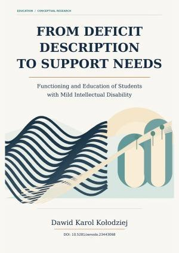
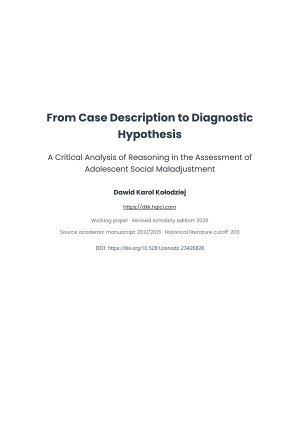
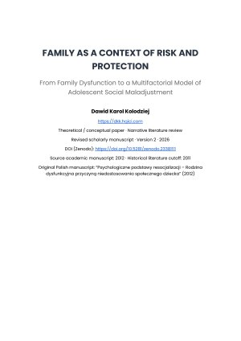

Psychopedagogical Association
Prezes od 2015 roku; odpowiedzialny za rozwój działalności zawodowej i edukacyjnej Towarzystwa, współpracę specjalistów, inicjatywy społeczne i kierunek organizacji.
ZDROWIE PSYCHICZNE · EDUKACJA · PRZYWÓDZTWO
Specjalista zdrowia psychicznego, psychoterapeuta, autor i lider organizacji. Łączę praktykę, edukację, publikacje i rozwój instytucji.
Poznaj dorobek ↗01 — WYBRANE PRACE
001 / 008Artykuły, opracowania badawcze, książki i projekty edukacyjne. Różne formy, wynikające z pytań stawianych w praktyce.

Od opisu trudności do funkcjonowania i praktycznego wsparcia

Rozumowanie diagnostyczne, interpretacja i osąd specjalisty

Procesy rodzinne i wieloczynnikowe ujęcie rozwoju młodzieży

02 / PROFIL ZAWODOWY
Specjalista zdrowia psychicznego, psychoterapeuta, autor i lider organizacji.
Pierwsze praktyki w organizacjach charytatywnych rozpocząłem w 2009 roku. Od 2013 roku rozwijałem praktykę zawodową w poradnictwie, psychoterapii i wsparciu psychospołecznym. Obecnie pracuję w sektorze zdrowia psychicznego w Queensland w Australii.
Mam dwa tytuły magistra — z psychologii sądowej i penitencjarnej oraz kierunku związanego z poradnictwem osobistym i zawodowym — a także licencjat z resocjalizacji i profilaktyki społecznej. Posiadam status PACFA Clinical Registrant. Równolegle tworzę projekty i kieruję organizacjami w poradnictwie i edukacji.
Pełny profil zawodowy ↗03 — SPOSÓB MYŚLENIA
Wiedza ma znaczenie, gdy
pomaga w praktyce.
04 / MEDIA I WYPOWIEDZI PUBLICZNE
Wystąpienia telewizyjne, wywiady i wypowiedzi eksperckie stanowią część mojej działalności publicznej. Archiwum prowadzi do oryginalnych materiałów i objaśnia ich kontekst.
Przeglądaj archiwum mediów ↗

05 / ETAPY ROZWOJU
2009—2026Rok 2009 dotyczy pierwszych praktyk, nie uzyskanych w późniejszych latach kwalifikacji.
Praktyki w organizacjach charytatywnych i społecznych przed uzyskaniem późniejszych kwalifikacji.
Rozwój pracy w poradnictwie, psychoterapii i wsparciu psychospołecznym.
Kierowanie organizacją i rozwój edukacji zawodowej oraz inicjatyw pomocowych.
Poszerzenie działalności o zarządzanie operacyjne i organizacyjne w biznesie oraz technologiach.
Praca w obszarze zdrowia psychicznego w Queensland i kierowanie Psychology Counselling Association.
Praca specjalistyczna oraz kierowanie sprawami akademickimi International Counselling Institute.
Publikacje, opracowania badawcze oraz kontynuowane studia z zarządzania.
06 / BUDOWANIE ORGANIZACJI
LEADERSHIP / 03Poradnictwo i zdrowie psychiczne to część mojej działalności. Kieruję również organizacjami, zarządzam projektami i rozwijam edukację zawodową.
Prezes od 2015 roku; odpowiedzialny za rozwój działalności zawodowej i edukacyjnej Towarzystwa, współpracę specjalistów, inicjatywy społeczne i kierunek organizacji.
Zarządzanie organizacją i rozwój strategiczny usług poradnictwa, współpracy zawodowej oraz projektów edukacyjnych.
Kierowanie rozwojem programów edukacji zawodowej, materiałów szkoleniowych, jakością kształcenia i doskonaleniem w poradnictwie.
07 / WYKŁADY I FOTOGRAFIA
Sale szkoleniowe, wykłady, wywiady, wydarzenia i spotkania organizacyjne — fotograficzne archiwum, nie zdjęcia stockowe.
Otwórz pełną galerię ↗

08 — KONTAKT
W sprawach zawodowych, publikacji, projektów edukacyjnych i możliwej współpracy zapraszam do kontaktu.
Napisz wiadomość ↗